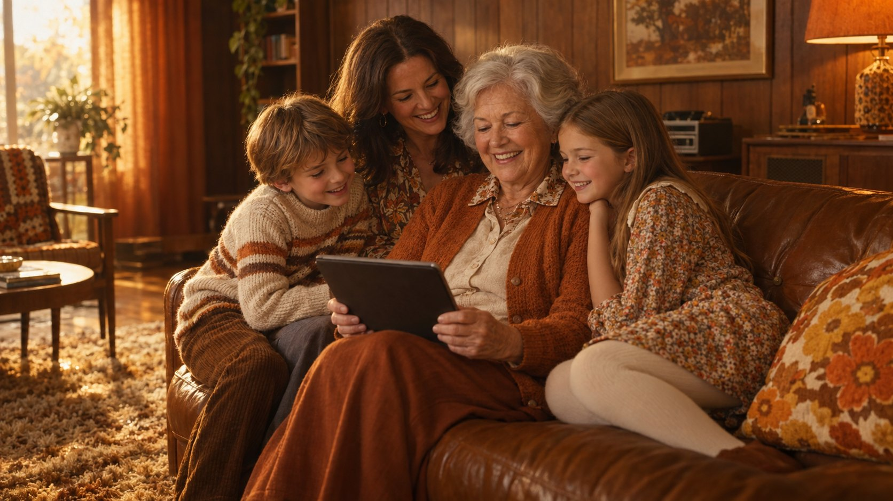
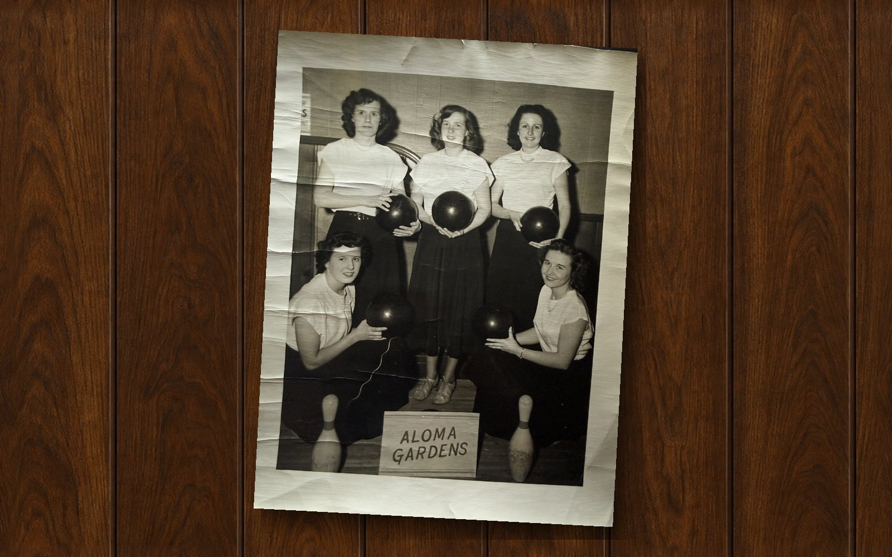
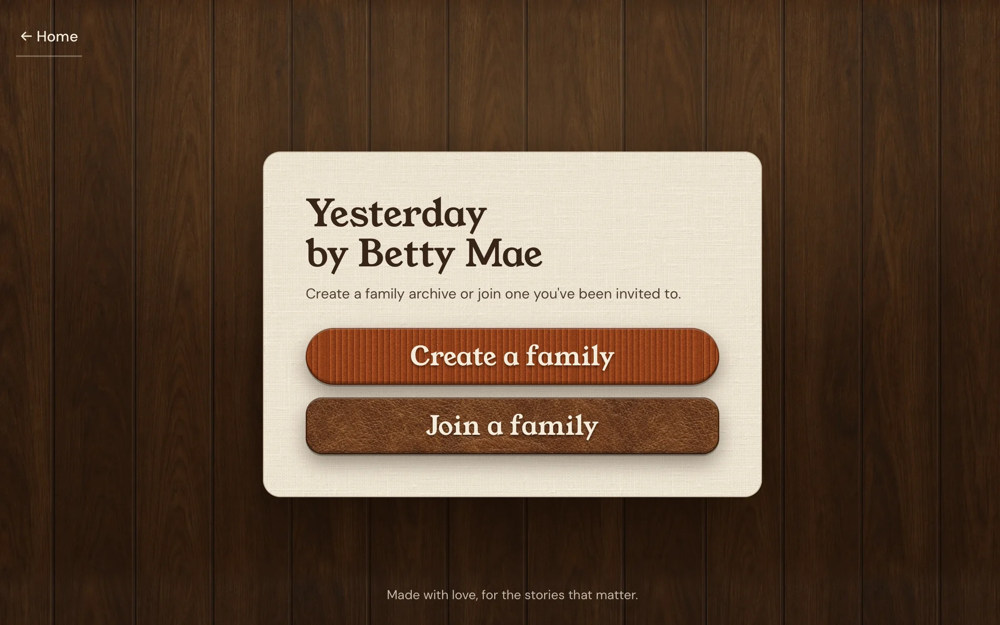
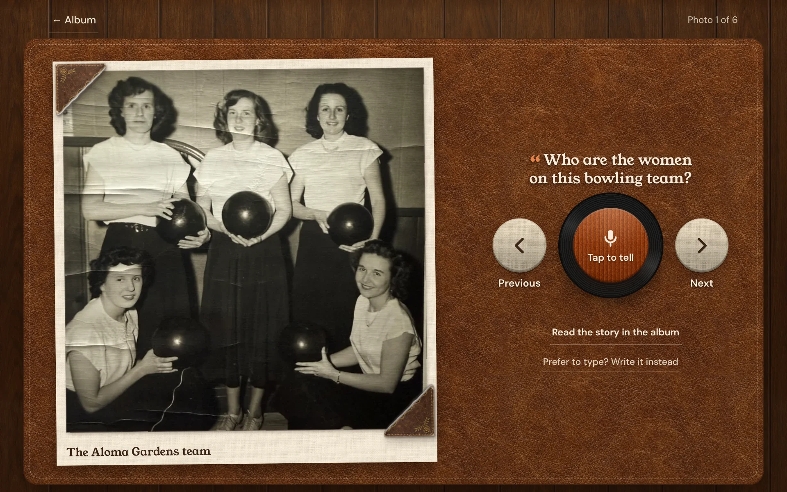
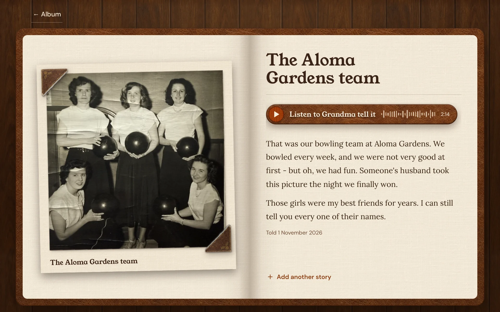

The storyteller
Needs large, obvious controls, plain language and no sign-up friction. She should never feel she has done something wrong, and she would rather speak than type.
Case studyPersonal product2026
What if simply picking up a photo and talking about it meant the story would be preserved, in her own voice, forever?

Every family has a keeper of its stories: the person who knows who is in the faded beach photo, why the road trip went wrong, and what was really baking that Christmas morning. When those stories are not captured, they are lost for good.
Most memory and genealogy products are designed for the people doing the archiving, not the people doing the remembering. They assume confident typing, comfort with menus, passwords and settings, and an appetite for learning new software. For many grandparents, those assumptions end the conversation before it begins.

Needs large, obvious controls, plain language and no sign-up friction. She should never feel she has done something wrong, and she would rather speak than type.
Uploads the photos, invites relatives and sets the stage, so that the storyteller only ever has to do one thing: tell.
Betty has seven great-grandchildren, with two more on the way. Many are too young to hear her stories today; this archive keeps them safe, in her own voice, for the day they are ready to listen, and to return to whenever they like.
For Betty’s 100th birthday on August 27, 2026, we started going through boxes of old family photographs. We barely made it through the boxes. But the photographs sparked memories naturally, without a list of questions or a formal interview.
A black-and-white prom photo led Betty to describe the black-and-pink dress she wore. That moment changed the brief: instead of asking someone to remember on command, start with something meaningful and let the memory come to them.

“Not another app that asks Grandma to do more. A familiar photo box that gives her room to tell.”
A familiar image is a more natural invitation than an empty text field or a questionnaire.
The spoken memory matters as much as the written transcript. Both should stay connected to the photograph.
Family members can contribute context and their own memories without replacing Betty’s original account.
The experience is intentionally simple. A family member adds photographs to the archive. Betty opens the app on a tablet, chooses to begin, and a photograph becomes the starting point for a natural, voice-led conversation.
Afterwards, the story lives alongside the image. Family can revisit the written memory, listen to the original recording, and add their own recollections.





The visual language takes cues from Betty’s living room and the physical objects around family photographs: walnut panelling, familiar fabrics, album mounts and the warm, slightly imperfect character of things kept for decades.
Texture is used as a quiet cue for familiarity, while the interface stays calm and readable.


Photo-corner mounts and material treatments were explored to make the album feel tactile and considered, rather than like a generic gallery.
 Aged floral
Aged floral Brass filigree
Brass filigree Ornate gilt
Ornate gilt Selected direction
Selected direction LeatherLinen
LeatherLinen Vinyl
VinylThe product walkthrough video is still being prepared. This space is reserved for the demo and will be replaced when the video is ready.
Video placeholder — demo will be added here.
The assistant is designed to support the conversation, not take it over. The selected photograph provides context for gentle prompts and relevant follow-up questions, while the storyteller remains the authority on what happened and who is in the picture.
The product pairs voice capture with a written transcript, keeping both associated with the original photograph so family members can revisit the story in the format that suits them.
Tablet-first interaction with large, clear touch targets.
Voice-led interaction with photo context and natural follow-up.
Family archives, invitations and shared access.
Product strategy, UX, visual design, prototyping and front-end build.
The strongest product insight came from a real moment: Betty looking at a photograph and remembering. The opportunity was not to teach her a new behaviour, but to build a thoughtful experience around one that already mattered.
Observation revealed a better starting point than a feature brainstorm could.
AI can organise and prompt, but should never overwrite the original voice or invent missing context.
When the content is irreplaceable, reliability, privacy and recovery are product design concerns.
THE PRODUCT IS LIVE
Explore the working family archive behind this case study.
Explore the live product ↗